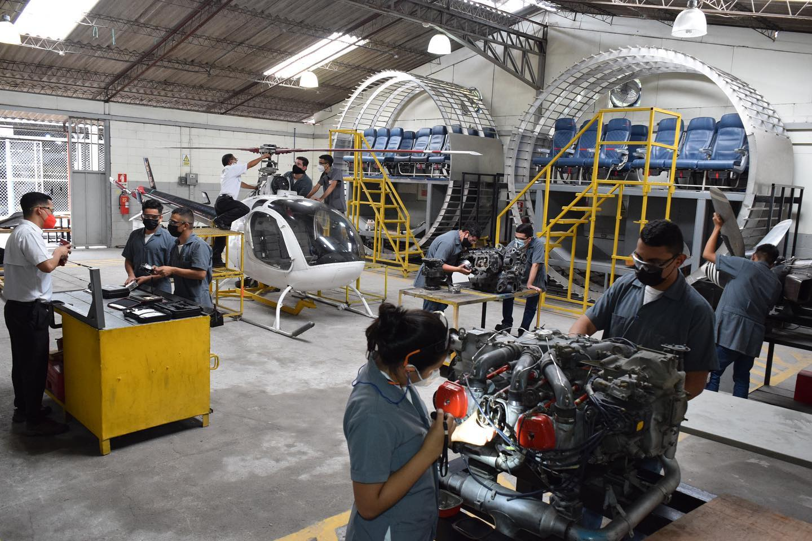
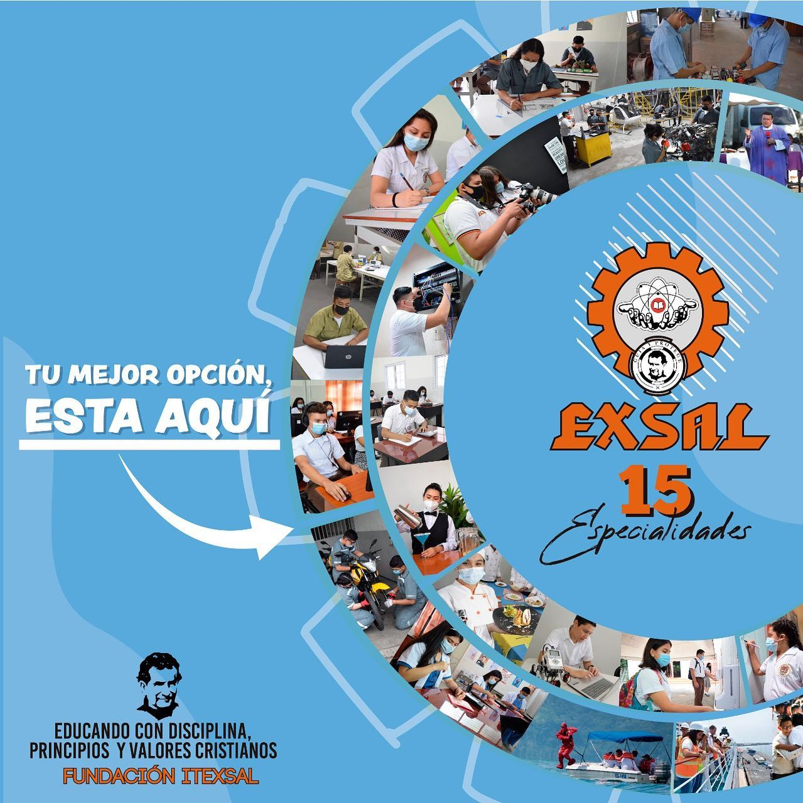

Entre las carreras que destacan en el EXSAL se encuentran técnico en mantenimiento aeronáutico y el área de formación de marinos mercantes, que posicionan al citado centro de estudios a la cabeza entre las instituciones de educación media brindando competencias técnicas en carreras innovadoras

La Comisión de Cultura y Educación de la Asamblea Legislativa visitó las instalaciones del Instituto Técnico de Ex Alumnos Salesianos (ITEXSAL) para conocer el modelo educativo que el ahora diputado Reynaldo Carballo inició hace 37 años.
Ana Gladis Cornejo, diputada de Ahuachapán por ARENA, señaló que la intención de la visita fue “sacar un modelo para ver si podemos implementarlo en todos los departamentos” con todas las carreras diversificadas que tiene el ITEXSAL, ya que está fundamentado en las necesidades profesionales y laborales que necesita El Salvador.

El referido instituto imparte 15 carreras técnicas, incluida aeronáutica y mecánica automotriz, cuyos talleres están organizados de tal manera que la juventud atendida en los mismos adquieran capacidades bajo los lineamientos y certificaciones necesarias para trabajar internacionalmente.
Según Carballo, Presidente de la comisión y fundador del centro educativo, “si nosotros, a través de esta comisión, damos los primeros pasos para hacer una transformación educativa en este país estoy seguro que en 15 años hemos transformado este pueblo”.